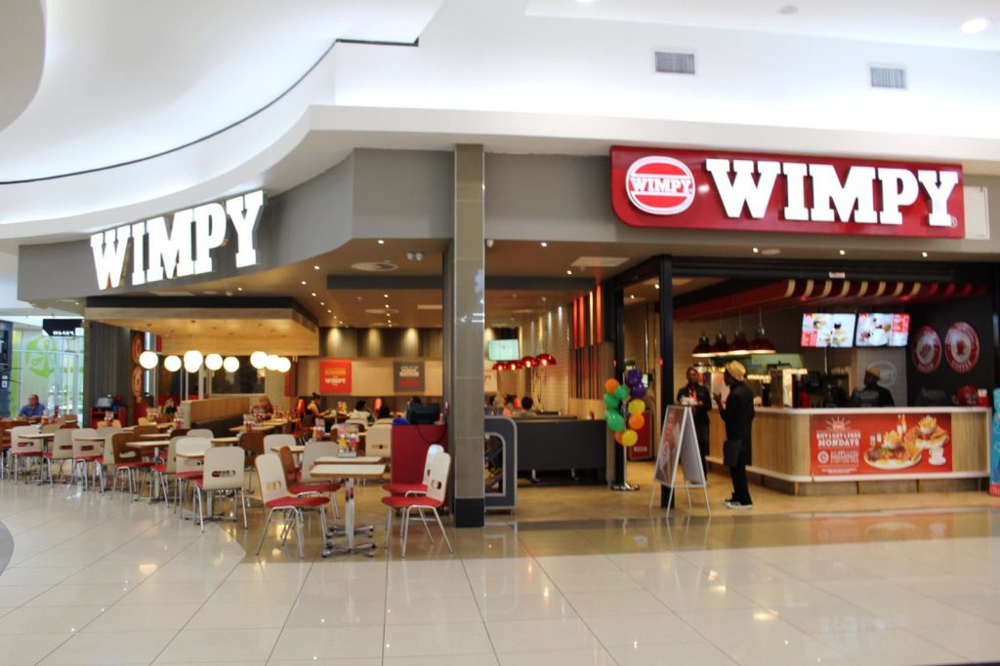
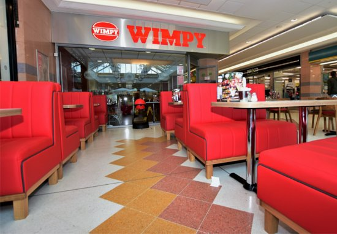
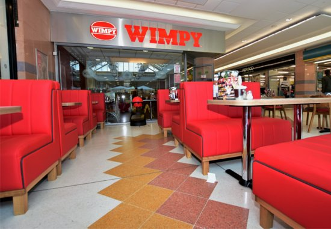

WIMPY
About wimpy
Wimpy is a fast-food chain that was founded in the United States. It found its success internationally, mainly in the United Kingdom and South Africa. It has changed between being a table-service establishment and counter-service establishment throughout its history.
The chain was founded in Bloomington, Indiana, by Edward Gold in 1934 as Wimpy Grills, with the chain in the United States hitting its peak with 26 locations in 1947. In 1954, Gold signed a license with J. Lyons and Co. for them to operate Wimpy Bar across the United Kingdom, with further international agreements a few years later through its subsidiary company, Wimpy International. By 1977, there were only seven Wimpy locations in the United States, which all folded following Gold's passing in that year. Despite the brand's demise domestically, the chain would peak at 1,500 international locations the following year.
The company was sold to United Biscuits in 1977, and then to Grand Metropolitan in 1989. Grand Metropolitan began to phase out the Wimpy Bar in the United Kingdom, rebranding many of them as Burger King (which it also owned) because Burger King had the greater brand recognition amongst consumers, and to aid market competition against McDonald's. Following various buyouts, Wimpy was sold to Famous Brands in 2007. Famous Brands had operated the South African Wimpy franchise for a number of years, and the acquisition made it the parent company.
As of October 2021, the company remains headquartered in Johannesburg, South Africa, where it has 459 outlets, this is followed by the United Kingdom with 71 outlets. In 2017 and 2020, the company announced plans for nationwide expansion in the United Kingdom.
 
